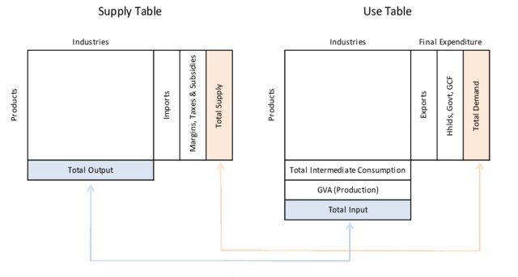

Assessment approach
We review policies against a set of key criteria by drawing on UK-specific evidence primarily as well as that from other countries. Outputs include a longlist appraisal scoring matrix, ‘modelling blueprints’ and recommendations for policy design and implementation.
Scope
Focus
While the term ‘circular economy’ (CE) has only appeared more recently in policy documents released by UK public bodies, policies whose objectives are congruent with the CE concept by delivering against one of its ‘value drivers’ (see ‘leveraging CE value using policy’), have been introduced in the UK since at least the 1970s.
We therefore adopt a broad scope in our review of instruments in order to capture regulations that may not explicitly include reference to the CE, but can otherwise be recognised as relevant. Policies captured in our review therefore include those levied on:
We use the following search terms.
Region
We prioritise evidence collected on instruments which have been applied in the UK due to institutional and contextual specificities of countries making up the UK. As in some cases, other countries have applied instruments not (yet) used in the UK, evidence from other countries as well as more aggregated meta-evidence for regions including not only the UK are also considered.
We identify relevant regulatory instruments from the government legislation portal, retained EU Law dashboard and OECD PINE Database for the period 1970-2022. To capture instruments being delivered outside regulatory systems, we extract information via the google search engine and engage directly with instrument developers such as Wrap.
Evidence sources
Evidence regarding the characteristics and performance of instruments is drawn on from the extant literature, with sources including theoretical modelling studies, surveys, post-implementation reviews, consultations, single policy assessments in scientific papers and meta-analyses. These utilise a range of methods including those quantitative and qualitative methods such as cost-benefit analysis, cost-effectiveness analysis and multi-criteria analysis.
We catalogue government plans, strategies, legislation, programmes and projects on which evidence is collected, with instruments coded based on their: medium of focus; material or substance(s) of focus; scale and region to which they are applied e.g. national-level and UK-wide or country region making up the UK; instrument type e.g. a ban or tax; applicable institutional sectors and where leived on industry, associated industry classification codes. Evidence is further flagged based on the region to which it relates.
Inputting to the policy cycle
Outputs of the review are intended to input to the policy development cycle through supporting shortlist and longlist appraisal and informing policy design and implementation. To do so effectively, we translate collated evidence into:
A scoring matrix of policies against critical success factors to inform longlist appraisal;
A set of modelling blueprints to help provide transparency of assumptions and consistency in ex ante modelling of policy instruments such as takes place during shortlist appraisal (Donati et al. 2020); and
Recommendations for policy design and implementation, to effectively and efficiently leverage instruments.
As the suitability of instruments will differ by product group and products, this is intended to be a first port of call in thinking systematically about which policy tools to use when trying to leverage CE value drivers to achieve social objectives.
Assessment against critical success factors
We assess key instruments making up the policymakers’ toolkit for delivering a more circular UK economy change against the following set of criteria or ‘Critical Success Factors’ (CSFs) - in the HM Treasury Green Book as ‘attributes essential to the successful delivery of projects and programmes’ (HM Treasury, 2022).
Modelling blueprints
To inform the modelling of policy pathways in a consistent and transparent way, one output of the review is a set of ‘modelling blueprints’ (Donati et al. 2020). These are a collection of assumptions informed by our evidence collection and structured in a way as to feed into core utilised appraisal frameworks. These are framed within a social accounting matrix (SAM) i.e. ‘a comprehensive and economy-wide database recording data about all transactions between economic agents in a specific economy for a specific period of time’ (Causapé, Ferrari and McDonald, 2018).
The policy taxonomy modelling blueprints presented here link to the CE-Hub’s agnostic value-chain taxonomy developed to provide a consistent representation of actors, activities and flows and stocks along a given value chain. These can be used together to identify the who and how of targetting interventions to drive change towards more circular and sustainable UK economies (IRP, 2021). The institutional and industrial sector classifications of the System of National Accounts can be superimposed on this ‘ecosystem model’ in the following ways… This links naturally also then to actors groups in multiregional input-output and macroeconomic analysis approaches.

End-points derived from our evidence review for use in modelling potential impacts of different policy types therefore include estimates for:
likely penetration rates - for instance, a voluntary approach could be expected to have a lesser participation rate than a mandatory approach, those even mandatory approaches may have freeriders where enforcement is low;
likely scale of effect per participant5;
the potential immediacy of an instrument’s effects following introduction;
potential costs and long-run effects such as innovation that may serve to reduce these; and
spillover effects.
These evidence-derived assumptions can be used alongside additional hypothetical policy assumptions including:
The scope of a lever e.g. whether a policy is applied to computers or all small appliances and institutional scope - i.e. to whom the lever would apply and any exemptions;
The focus of the instrument e.g. reducing production leakage, lightweighting and material substitution or lifespan extension;
At what level the lever is set e.g. the length of the mandatory minimum lifetime of product or rate of tax applied; and
When the lever is introduced, including accounting for sequencing and interaction effects
to input to the modelling of policy impacts in a consistent way. We outline the input requirements of core appraisal methodologies below. These approaches are increasingly being used in conjunction with one another to answer stakeholder questions relating to the circular economy (Hellweg et al. 2023).
Policy recommendations
How policy is designed and implemented is critical to reducing the economic burdens potentially posed by regulation such as increased barriers to market entry, reduced competition, transaction and administrative costs (Berestycki and Dechezleprêtre, 2020). Informed by the review undertaken and account for current commitments, recommendations for policy change are made grouped into the following categories, for which several may apply:
About us
The CE-Hub is the coordinating Hub for the NICER Programme, a four-year programme working to provide the evidence base needed to deliver a resilient and restorative Circular Economy for the UK. The Hub works with the five UKRI National Interdisciplinary Circular Economy Research Centres, and brings together academics, industry practitioners, policy makers and civic society to deliver CE research and innovation. Find out more information and sign up to updates here: https://ce-hub.org/
Contact: oliverlysaght@icloud.com
Footnotes
This can also be a pragmatic approach as in some cases, policy in linked areas such as covering emissions have greater political traction and can be extended to make them a further enabler of CE value drivers in an efficient way. In many cases, policies of interest may be under-developed in the UK relative to other countries.↩︎
Cost-effectiveness analysis involves a monetary assessment of costs alone while not for benefits.↩︎
Cost-benefit analysis involves measuring net benefits or benefit-cost ratios through both costs and benefits being monetised.↩︎
Such as the IMO’s 2018 Ship Emissions Regulation leading to the installation of equipment helping meet atmospheric emissions regulations but by routing discharge into the ocean.↩︎
Assuming full compliance, very direct with prescriptive regulation which effectively prescribes the outcome. More indirect policy interventions which don’t prescribe outcomes e.g. labelling, EPR or fiscal mechanisms, requires informed assumptions regarding likely efficacy of impact depending on intermediating parameters.↩︎
Technological change consists of innovation of new technologies that were not available thereby expanding the production-possibility frontier, and diffusion of existing technologies to new users, thereby reducing the gap between the average production techniques used and the frontier.↩︎